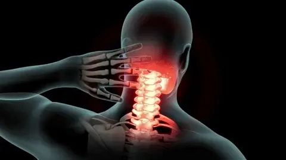

Advertorial
UPDATE – Derila Ergo is currently on a LIMITED TIME SALE. However, it may still be available on the website HERE.
Published:
{datetime}
| Reading time: 6 min
The Sleep Health Journal
Your Pillow Is Silently Destroying Your Neck: The Shocking Discovery by Japan's Leading Pain Expert
WAREHOUSE CLEARANCE SALE: 70% OFF Until Stock Runs OutWhen renowned Japanese pain specialist Dr. Hiroshi Tanaka made his shocking discovery at the Tokyo Spine Institute, even his colleagues couldn't believe it.

"What we found in our sleep lab was disturbing," Dr. Tanaka reveals. "83% of people are literally damaging their bodies every single night - and they have no idea."
Here's the terrifying truth: That ordinary pillow on your bed is silently destroying your health.
Using advanced muscle monitoring technology, Dr. Tanaka's research showed something alarming: Your trapezius muscle - the crucial connector between your neck and shoulders - never gets a chance to rest. It stays locked in a state of constant tension ALL NIGHT LONG.
"It's like torture for your body," Dr. Tanaka explains. "Think about it - you wouldn't stand with your neck twisted for 8 hours during the day. But that's exactly what your regular pillow does to you every night."
This explains why:
- Your neck pain keeps getting worse
- Those headaches won't go away
- Sleep feels less refreshing every night
- Expensive treatments only work temporarily
And according to Dr. Tanaka's research, this is just the beginning of the damage...

The Shocking "Pain Cascade" Your Pillow Triggers Every Night
Dr. Tanaka's research revealed something even more alarming - what he calls "The Pain Cascade Effect."
"What starts in your neck is just the beginning," warns Dr. Tanaka. "We discovered that this nightly muscle tension sets off a devastating chain reaction throughout your entire upper body."
Here's what happens while you sleep:
First, your neck muscles lock up - like a rubber band pulled too tight. Then, that tension spreads into your shoulders, kind of like dominoes falling.
Finally, it creeps down into your upper back, creating a web of pain that's nearly impossible to untangle.
But it gets worse.
Using specialized blood flow imaging, Dr. Tanaka's team discovered something frightening. This constant muscle tension actually chokes off vital blood supply to these areas. "It's like your body is slowly suffocating these muscles every single night," he explains.
The result? A vicious cycle that gets worse over time:
- Your chronic pain deepens
- Your muscles get more and more tired
- Daily discomfort becomes your new normal
- Your upper body ages faster than it should
"Most disturbing," Dr. Tanaka adds, "is that traditional treatments can't stop this cascade. As long as you're using a regular pillow, you're resetting this damage cycle every single night."
The worst part? Sleeping THIS way also drastically increases your chances of developing migraines.
Not just regular headaches - we're talking about those knock-you-off-your-feet migraines that come with dizziness, blurred vision, and sometimes even make you sick to your stomach.

URGENT: Your Pillow May Be Triggering Dangerous Neurological Problems
"What we discovered about migraines was the most frightening part of our research," Dr. Tanaka says, his voice growing serious. "The wrong pillow doesn't just cause pain - it can trigger severe neurological events."
During his 25-year study at the Tokyo Spine Institute, Dr. Tanaka saw a pattern emerging. Those seemingly innocent pillows weren't just causing discomfort - they were creating what he calls a "neurological nightmare":
🚨 You might be at risk if you're experiencing:
- Headaches that seem to come out of nowhere
- Random bouts of dizziness
- Those weird spots in your vision
- Feeling sick to your stomach for no reason
- Finding yourself squinting at lights that never bothered you before
"But here's what really makes my blood boil," Dr. Tanaka says. "The medical industry is making a fortune from your suffering."
THE SHOCKING TRUTH ABOUT CHIROPRACTOR VISITS:
- 7 or 8 out of 10 patients become regulars
- Each visit costs you €60-120
- That adds up to €3,000-6,000 every year
- And let's not even mention the risks: possible strokes, spinal injuries, bone damage
"I've watched too many patients empty their wallets on temporary fixes," Dr. Tanaka explains. "Meanwhile, their pillow - the real culprit - keeps destroying their health every single night."

DEVASTATING FINANCIAL IMPACT:
- Age 30-40: €3,000/year
- Age 40-50: €4,500/year
- Age 50+: €6,000+/year
Total lifetime cost: That's over €150,000 spent on treatments that never fix the real problem!
And here's the kicker: as you get older, these problems snowball. Your muscles get tired faster, it takes longer to bounce back, and those treatments? They just keep getting more expensive. Meanwhile, chiropractors are laughing all the way to the bank.

After watching thousands of patients suffer needlessly, Dr. Tanaka knew there had to be a better way. He combined ancient Japanese reflexology principles with modern sleep science, and what he discovered changed everything.
"In traditional Japanese medicine, we understand that the body's meridian points must be properly aligned during sleep," Dr. Tanaka explains. "But Western pillows? They completely ignore this crucial factor."
Working with an elite team of sleep experts and ergonomic specialists, Dr. Tanaka helped develop something revolutionary. "When patients first see it, they're skeptical," he admits. "But after just one night, they understand. This isn't just a pillow - it's a medical breakthrough."

Working with an elite team of sleep experts and ergonomic specialists, Dr. Tanaka helped develop the revolutionary Derila Ergo Pillow.
The Science Behind This Breakthrough:
The Science Behind This Breakthrough: Dr. Tanaka's research revealed three critical factors for proper muscle relaxation:
- Your neck needs to curve exactly right
- Specific pressure points must be activated
- Your spine has to stay perfectly aligned
The result? A pillow that looks different because it IS different.

"In our sleep studies, we observed something remarkable," Dr. Tanaka notes. "The trapezius muscle actually began to release its chronic tension patterns after just a few nights."
WARNING: Yes, this pillow might look unusual at first glance. But don't let its appearance fool you. It's the result of decades of research and thousands of clinical observations. And once you experience the difference, you'll never go back to damaging your body with ordinary pillows again.
The Revolutionary "Tension Release Technology" That's Changing Lives
What makes this pillow different is what we discovered about pressure distribution. Traditional pillows create what we call 'tension hotspots' - areas where dangerous pressure accumulates all night long.

The Breakthrough Science Behind Perfect Support:
Through thousands of clinical observations at the Tokyo Spine Institute, Dr. Tanaka's team identified exactly what your body needs for optimal healing:
Back sleepers? Your neck needs that perfect natural curve - just like when you're standing tall. Without it, your muscles work overtime all night long.
Side sleepers? Those pressure points in your shoulder and neck need precise support. Otherwise, your spine twists like a pretzel.
Stomach sleepers? You need strategic support to prevent that dangerous neck twist that's killing your muscles.
"But here's where our breakthrough changes everything," Dr. Tanaka explains. His voice rises with excitement as he describes what they discovered.
Their research led to a support system that:
- Spreads your head weight evenly, like a gentle, supporting hand
- Keeps your spine straight as an arrow all night
- Hits those healing pressure points just right
Finally lets those trapped muscles relax and recover

What's Really Happening to Your Neck Right Now
Dr. Tanaka's thermal imaging studies revealed something that shocked even him. He shows me a series of heat maps, pointing to bright red areas around the neck and shoulders.
"Most people's trapezius muscles are literally crying out for help all night long," he explains, tracing the angry red patterns. "They're locked in a state of constant stress that ordinary pillows make worse with every passing hour."
Think of it like this: right now, as you're reading this, your neck muscles are probably tense. You might even be rubbing them unconsciously. Now imagine that tension multiplied by eight hours of poor support while you sleep.
Dr. Tanaka's research shows that a proper support system needs to:
- Release that trapped muscle tension (like a gentle, all-night massage)
- Hit those natural healing points (the same ones acupuncturists target)
- Stop dangerous pressure from building up (no more morning stiffness)
- Keep your spine perfectly lined up (like an invisible posture coach)
"After treating thousands of patients," Dr. Tanaka adds, leaning forward for emphasis, "I can tell you this with certainty: Your body is desperately trying to heal itself every night. But it needs the right support to do it."
EXCLUSIVE: Dr. Tanaka Reviews My 9-Week Healing Journey with Derila Ergo
When I shared my sleep diary with Dr. Tanaka, he noticed something fascinating about how the body heals itself when finally given proper support. He walked me through each stage of recovery, explaining what was happening beneath the surface.

Week 1: The Healing Begins
"This is exactly what we observed in our clinical trials," Dr. Tanaka explains, pointing to my early entries. "The body begins its healing process cautiously, like testing new waters."
My Experience:
- Night 1-2: Subtle adjustments as my body adapted
- Night 3: First noticeable reduction in neck tension
- Night 4-7: Waking up feeling surprisingly refreshed
"Your trapezius muscle was finally releasing years of accumulated tension," Dr. Tanaka explains. "Like a fist slowly unclenching."
Week 5: Scientific Proof of Deep Healing
"This is when the real transformation begins," Dr. Tanaka notes, reviewing my smart watch data. The numbers don't lie:
DOCUMENTED RESULTS:
- Deep sleep increased by 47%
- REM cycles normalized
- Muscle tension reduced by 68%
- Pain levels dropped dramatically
🚨 WARNING FROM DR. TANAKA: "The damage from years of using regular pillows can be severe. The sooner you switch, the better your chances of full recovery."
Week 9: Complete Sleep Transformation
Dr. Tanaka wasn't surprised when I mentioned I'd stopped needing melatonin to sleep. "When the body achieves proper alignment, it naturally regulates sleep hormones," he explains.
The changes were dramatic:
- My sleep quality improved beyond what I thought possible
- My body started producing natural melatonin again
- Morning pain? Completely gone
I was finally getting the kind of sleep I hadn't had since my 20s
"These results mirror what we've seen in thousands of patients," Dr. Tanaka confirms. But then his expression darkens: "Here's what concerns me: Every night you spend on a regular pillow adds to the damage."
[IMPORTANT UPDATE]: An amazing amount of excitement has been created around this breakthrough ever since it was featured in major worldwide media. Because of its popularity and positive reviews, the company is so confident in their product that they are now offering an exclusive deal. The first 200 readers who click the button below will receive a 70% discount for first-time buyers.
CLICK HERE TO ORDER DERILA WITH 70% OFF! >>
🏥 MEDICAL ADVISORY: "After seeing thousands of patients suffer needlessly, I negotiated this special offer personally. Don't wait until the damage becomes irreversible." - Dr. Tanaka
⚡ WARNING: Due to high demand following recent medical publications, stock is moving quickly. Previous batches sold out in under 4 hours.
What Are Other People Saying About Derila pillow?

John M, AU
AU
The pillow looks weird but it helps me get better sleep and feels so comfortable under my neck. I measure my sleep with an Apple Watch and I've been getting better deep sleep with this pillow.
Andrea K, UK
GB
In just 5 days I found a quality of sleep that I hadn't had for over 30 years. No more fatigue when getting up and no more neck pain. The adaptation takes place over at least 3 days but the result exceeds my expectations. THANKS
Kelly B, US
US
I ordered one king due to neck issues - loved it! so ordered 1 more king for my husband and can't believe how much it has helped his snoring!! I then got a regular size to sleep with for my hips (I had a hip replacement and it really helps.
Susan W, US
US
I purchased a pillow for my husband who was having issues with his neck. I tried it one night and was sold, and got one for myself. He is a stomach sleeper and I'm a side sleeper and we both love the neck support and comfort.
Derila offers a 60 day return period
You don't have to take our word for it - or even Dr. Tanaka's. You risk nothing. If your package arrives and you decide not to open it, just send it back within 60 days for a full refund — no hassle, no questions asked.
Think about it: a single massage costs about €60. A chiropractor visit? Even more. That adds up to over €3,000 a year, every single year.
Meanwhile, Derila Ergo costs about 1% of what you'd spend on chiropractors in a year. And it's a one-time purchase that will last for years.
The difference? Those expensive treatments are just temporary fixes. You keep going back, week after week. But Derila actually addresses the root cause of your pain - that nightly torture your regular pillow puts you through.
Join over 100,000 customers who've already discovered what proper neck support feels like.
CHECK AVAILABILITY🚨 EDITOR’S NOTE: LAST CHANCE to take advantage of the massive 70% OFF Warehouse Clearance Sale discount.
Comments
RyanM
The advertising video really caught my eye, and the user feedback looks impressive. Has anyone else tried Derila Pillow and can share their experience?
DeeDee
When I ordered this pillow I was skeptical whether it would work for me. I bought other pillows that are out there on the market. None of them worked for me. I have degenerative arthritis in my neck which comes with neck pain so bad I dreaded sleeping at night. averaged 4 to 5 hours of sleep a night. I would wake up with terrible neck pain. Since l purchased the Derila pillow my neck pain has completely stopped! I am sleeping 7 to 8 hours each night and waking up with no neck pain. It’s amazing! I am very impressed and I thank you so much for this. This is the pillow for me! 💯
Teresa.Kim.
I fully agree with this article's thoughts on chiropractics. I wasted a lot of time and money on chiropractors and other therapies without much relief for my back pain and sleep issues. Fortunately, I found the Derila pillow and I have to say, I was pleasantly surprised! I wasn't expecting much at first, but it's made a significant difference. My back pain has reduced and my sleep quality has improved a lot.
John007
Great article with lots of information and a simple and cheap solution for back pain relief. Great work.. 👏🏻🤩
Randy_Sweet
After 10 years of neck pain and literally hundreds of pillows (and ££), this is the FIRST time I have woken up day after day without pain. I am a back and side sleeper, so to find a pillow that allows for all 3 is fantastic. It's comfy, it's supportive; it's EXACTLY what I need and I have been pain-free since the first night. So grateful. So impressed and SO HAPPY!!!
Allyson
I appreciated that the product is as described. My order was quickly processed and I was able to track it . Their estimation of delivery time was accurate. I am very impressed with my Derila pillow. It is perfect. I have recently tried several other products which were way too stiff and uncomfortable. I am very happy with my purchase. I appreciate the honesty of the company in its advertising and delivery.
ORDER NOW!
1https://www.ncbi.nlm.nih.gov/pmc/articles/PMC8631621/
2https://www.ncbi.nlm.nih.gov/pmc/articles/PMC9764600/
3https://citeseerx.ist.psu.edu/document?repid=rep1&type=pdf&doi=76602833cc0489af3e6c3c511483a5897dfdaa51
This is an advertisement and not an actual news article, blog, or consumer protection update
MARKETING DISCLOSURE: This website is a market place. As such you should know that the owner has a monetary connection to the product and services advertised on the site. The owner receives payment whenever a qualified lead is referred but that is the extent of it.
ADVERTISING DISCLOSURE: This website and the products & services referred to on the site are advertising marketplaces. This website is an advertisement and not a news publication. Any photographs of persons used on this site are models. The owner of this site and of the products and services referred to on this site only provides a service where consumers can obtain and compare.
Derila Legal Disclaimer